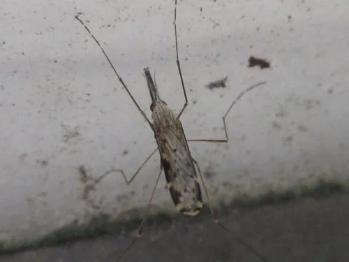

昆虫 · 动物界
中华按蚊 Anopheles sinensis

停歇时尾部翘起的灰褐色按蚊，是中国平原地区疟疾和丝虫病的主要传播媒介，幼虫孳生于稻田。
- 分类
- 门节肢动物门纲昆虫纲目双翅目科蚊科属按蚊属
- 栖息环境
- 稻田、池塘、沟渠等静水及附近的畜舍与村落
- 地理分布
- 中国除西北干旱区和高寒区外的大部分地区，及日本、朝鲜半岛、东南亚
- 保护级别
- 常见媒介昆虫，无保护需求，属重点防控对象
物种志
中华按蚊的成虫体长约五毫米，体灰褐色，翅前缘有两个淡色斑，翅面有由鳞片组成的斑点。停歇时身体与停面成一定角度，尾部翘起，这是按蚊的典型姿态，与库蚊身体平行的姿势明显不同。雌蚊触须与喙等长，幼虫没有呼吸管，平浮在水面取食，与倒挂在水下的库蚊幼虫也不一样。
它分布于中国除西北干旱区和高寒区以外的大部分地区，以及日本、朝鲜半岛和东南亚，是平原稻区最常见的按蚊。雌蚊在夜间吸血，喜吸牛、猪等家畜血，也兼吸人血，傍晚最为活跃。幼虫孳生在稻田、池塘、沟渠等静水中，一年可繁殖多代。它能传播疟疾和班氏丝虫病，是中国疟疾防控的重点媒介，防治以稻田养鱼和清除积水为主。
形态与习性
- 体长约五毫米，体灰褐色
- 停歇姿态尾部翘起，身体与停面成角度
- 翅前缘两个淡色斑，翅面有鳞斑
- 幼虫无呼吸管，平浮水面取食
- 孳生稻田、池塘、沟渠等静水
- 传播疟疾、班氏丝虫病
趣味知识
- 它停在墙上时屁股高高翘起，这个姿势一眼就能把按蚊和库蚊分开。
- 中华按蚊最爱稻田，平原稻区疟疾流行往往与它有关。
- 它的幼虫没有呼吸管，只能平躺水面，捞孑孓时很容易分辨。
生态关系
- 寄生 ← 恶性疟原虫 按蚊传播疟疾